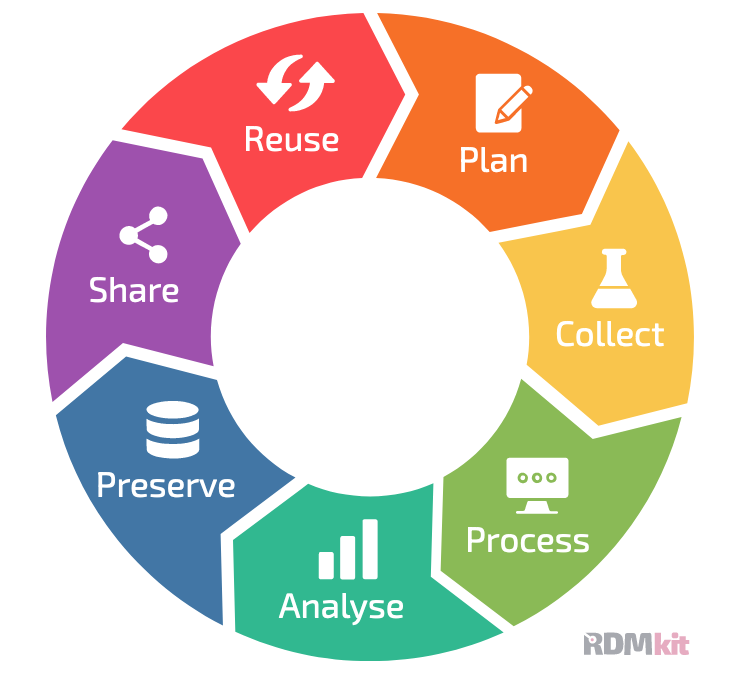

What is Data Stewardship?
Contributors
 Robert Andrews
Robert Andrews
 Branka Franicevic
Branka Franicevic
 Sara Morsy
Sara Morsy
 Krzysztof Poterlowicz
Krzysztof Poterlowicz
Learning Objectives and Notes
-
To be familiar with the term Data Stewardship
-
To be able to understand the different Data Stewardship roles in the Life Sciences
Speaker Notes
-
In this RDMbite we define Data Stewardship and the role of the Data Steward in the Life Sciences.
-
We will also define the 3 broad areas of Data Stewardship.
What is Data Stewardship?
.pull-left[ Data Stewardship includes all activities necessary to ensure research data are FAIR (Findable, Accessible, Interoperable, Reusable). These activities include all 7 spokes of the Data Life Cycle (Plan, Collect, Process, Analyse, Preserve, Share, Reuse) ]
.pull-right[.image-75[]]
Speaker Notes
-
So what is Data Stewardship?
-
Data Stewardship is a term used to mean the management of data. Data Stewardship includes things like data accessibility and usability, so people can take data and trust and use it easily and safely.
-
You may have heard of the term FAIR data which deals with these principles.
-
The requirement for effective Data Stewardship has grown in the Life Sciences. This is because people now work with large and complex and sensitive datasets.
-
Growth in Data Stewardship accompanies the professionalisation of the Data Stewardship role in the Life Sciences, where this role often acts as a single point of contact for people within an organization.
-
This role is advisory and is able to help people manage their data better. Commonly this role is performed by bioinformaticians or data savvy researchers, and IT and facility support staff.
What are the Three Data Steward Roles?
Data Steward: Policy
Research data management (RDM) policy and strategy for an institution.
Data Stewards: Infrastructure
Infrastructure building, such as building IT data storage, to support RDM policy and practice.
Data Stewards: Research (including researchers)
RDM planning, support and implementation on the ground.
Speaker Notes
-
Data Stewardship in the Life Sciences falls into three categories though it could be argued that there are four if we include data savvy researchers performing Data Stewardship as part of their research.
-
So what are these 3 categories?
-
In policy, Data Stewards work at the level of developing, implementing and monitoring research data management policy within an institution. These Data Stewards work closely with researchers and support staff as well as finance and legal teams.
-
In Infrastructure, Data Stewards are usually IT support staff. They maintain research infrastructure such as secure storage and tools enabling reproducible research such as analysis workflow and pipelines.
-
Lastly Data Stewards in Research cover a spectrum of professionals within a department or institute, from fulltime staff dedicated to FAIR Data Stewardship or more commonly a go-to person in the department who advises on good data management practice.
Professionalisation of Data Stewardship
.pull-left[ Role Profiles
]
.pull-right[ Competency Frameworks
]
Speaker Notes
-
Professionalisation of Data Stewardship is an evolving process.
-
Role profiles and competency frameworks enable institutions to recruit and embed Data Stewards into daily research. These can be found on the ELIXIR RDMkit website and the EBI Competency Hub.
Thank you!
This material is the result of a collaborative work. Thanks to the Galaxy Training Network and all the contributors! This material is licensed under the Creative Commons Attribution 4.0 International License.
This material is licensed under the Creative Commons Attribution 4.0 International License.